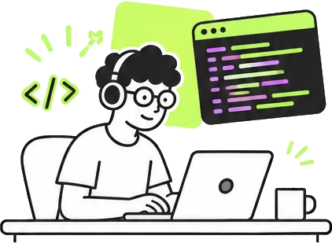
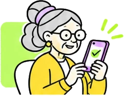
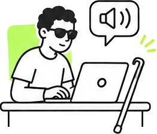

78
nota · exemplo
- Conteúdo
- Navegação
- Interface
- Acessibilidade
Valide projetos web com personas reais, combinando usabilidade, acessibilidade e conteúdo.

Simule o uso da sua aplicação por diferentes perfis, como uma pessoa idosa, alguém com deficiência visual e outros contextos de uso.
A IA pode criar interfaces rapidamente, mas só a validação com o olhar de pessoas reais revela as barreiras que atrapalham de verdade.

Valide sua aplicação com diferentes perfis de uso, como pessoas idosas, pessoas com deficiência visual, baixa familiaridade com tecnologia e muito mais. Cada persona tem aparelho, limites e objetivos próprios.
Veja o que funciona, o que precisa ser corrigido e onde ajustar, com evidências, pontuações e sugestões objetivas.
Execute o ux-validate com as ferramentas que você já usa, no terminal e no CI do GitHub.

Verificações automáticas e testes práticos, alinhados às principais referências.